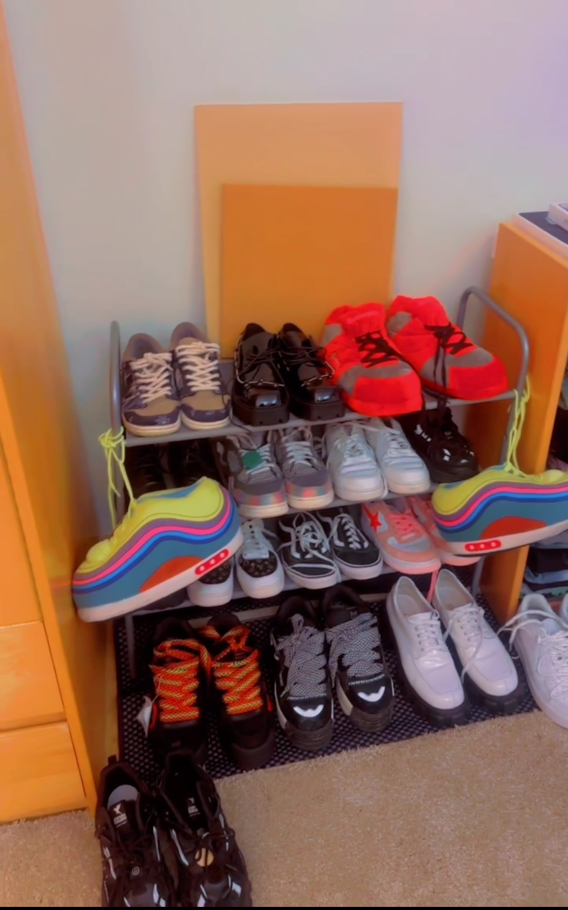
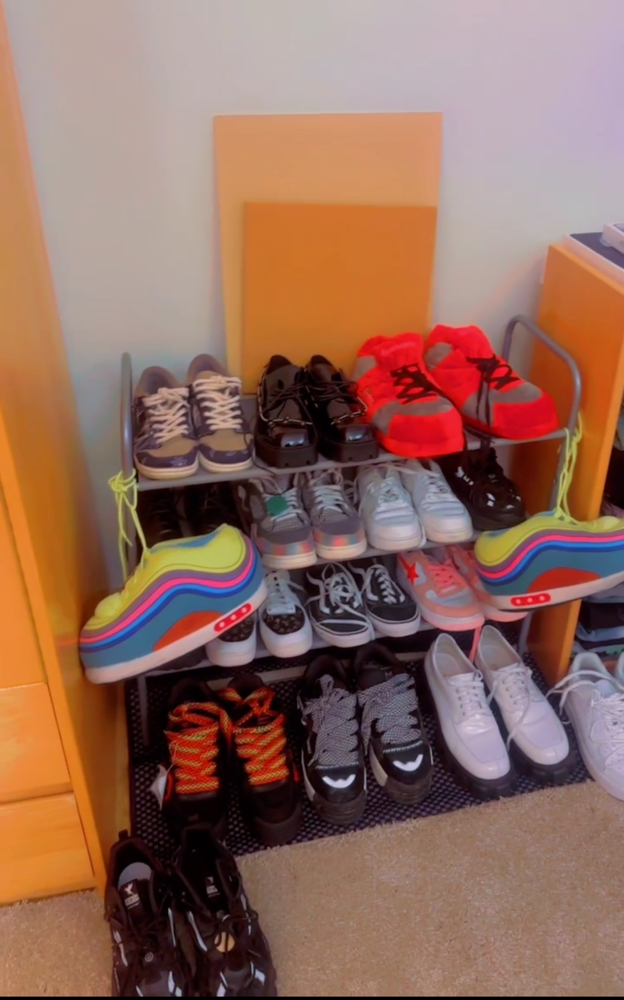

I've always loved fashion and interior decoration. My wardrobe houses a small collection of designer clothes and fancy shoes, and my college room is often praised as one of the most decorated on campus. It's a form of self-expression—a way to create a space that feels uniquely mine. Yet, whenever friends visit, their first reaction is often surprise, followed by assumptions.
I vividly remember an acquaintance walking into my room and blurting out, "Wait, how do you afford all this? Weren't you in FSI?" For context, the Freshman Scholars Institute (FSI) is a Princeton program for low-income and first-generation students, designed to help them adjust to college life before the academic year begins. His comment revealed two deeply embedded stereotypes: that owning designer clothes and creating a well-decorated space equates to wealth, and that coming from a low-income background should automatically exclude me from such luxuries.
These assumptions aren't entirely baseless. In a society where material possessions often signal status, it's easy to connect the dots: luxury items = money. But as we discussed in class, physical aesthetics are often an unreliable narrator. They tell only part of the story, leaving out the nuances and sacrifices that go unnoticed.
For instance, what my acquaintance didn't see was the strategy behind my lifestyle. Many of my "designer" clothes were thrifted or purchased during end-of-season sales. My room decorations? A mix of DIY projects, hand-me-downs, and items I've carefully curated over time. I've learned to stretch every dollar, making choices that allow me to indulge in my passions without breaking the bank. But people rarely consider the possibility that someone from a low-income background could simply be resourceful.
This interaction made me think critically about how we judge people based on appearances. On one hand, we're conditioned to see material possessions as shorthand for wealth or status. On the other, we hold biases that limit our understanding of how individuals navigate their circumstances. Why should being low-income mean I can't enjoy nice things? Why should someone assume my financial choices are any less deliberate or meaningful than theirs?
These stereotypes reflect a broader societal tendency to equate financial background with capability, creativity, or even worthiness. They strip away the complexity of individual experiences, reducing people to a single narrative: rich or poor, have or have-not. Yet, the reality is much messier. Many of us from low-income backgrounds have mastered the art of appearing to have more than we do—not out of deceit, but because we refuse to let financial constraints define us.
This isn't just about me; it's about how society interprets wealth, style, and identity. Why are aesthetics so closely tied to assumptions about privilege? Perhaps it's because material goods are visible, while the behind-the-scenes effort—budgeting, strategizing, sacrificing—is invisible. We see the polished exterior but ignore the hours of work, creativity, and planning that went into creating it.
Ultimately, my experience highlights a tension between perception and reality. Yes, aesthetics can be a reflection of wealth, but they can also be a reflection of resourcefulness, values, or priorities. It's easy to judge someone based on what you see, but much harder to dig deeper and understand the choices that brought them there. And if my taste in fashion or décor challenges someone's assumptions about what a "low-income student" should look like, maybe it's time to rethink those assumptions altogether.